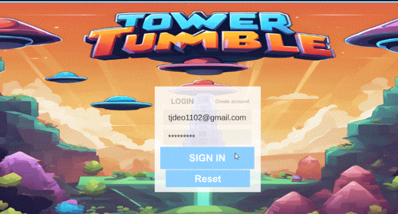

개발노트
ONLINE PUZZLE · 2024.11 — 2024.12 · PM / 게임 루프·UI
Tower Thumble
같은 블록을 쌓아도 퍼즐에서는 모양이, 레이스에서는 높이가 승패를 결정합니다. 세 모드가 공유하는 경기 진행과 각자 다르게 판정할 규칙을 분리했습니다.

담당 작업
Puzzle·Race·Survival 모드별 게임 규칙
공통 게임 흐름을 GameState 부모 클래스로 추상화
서버 시간 기반 시작 시점 동기화와 지연 보상
Firebase Auth와 PUN2 기반 로비·매치메이킹 UI
구현 과정
공통 상태 흐름
GameState 추상 클래스에 준비, 시작, 블록 생성, 종료, UI 갱신과 네트워크 예외 처리를 정의했습니다.
모드 규칙 주입
Puzzle은 목표 형태 충돌, Race는 최고 높이, Survival은 HP와 Freeze를 승패 기준으로 구현하고 공통 흐름에는 모드별 판정만 연결했습니다.


동시 시작 보정
방장이 PUN 서버 시간 기준의 시작 시각을 공유했습니다. 각 클라이언트는 수신 시점과 목표 시각의 차이를 계산해 동일한 게임 시간에 진입했습니다.
로그인부터 매치까지
Firebase Auth 인증, 닉네임 설정, PUN 로비 접속, 방 생성·참가를 하나의 UI 흐름으로 연결하고 방 Custom Property에 선택 모드를 기록했습니다.

개발 중 해결한 문제
클라이언트마다 시작 시간이 다름
RPC를 받은 순간 카운트다운을 시작하면 네트워크 지연이 그대로 경기 차이가 됐습니다. 서버의 절대 시작 시각을 기준으로 남은 시간을 역산해 지연된 클라이언트를 보정했습니다.
점수와 충돌이 중복 판정됨
Puzzle의 Overlap과 점수 판정을 Master Client만 수행하도록 권한을 집중했습니다. 다른 플레이어는 결과만 받아 UI와 상태를 갱신해 중복 집계를 막았습니다.
모드 추가 때 기존 코드가 흔들림
공통 생명주기와 모드 규칙을 분리해 새로운 모드는 GameState를 상속하고 판정 메서드만 구현하도록 변경했습니다. UI와 네트워크 흐름은 재사용했습니다.